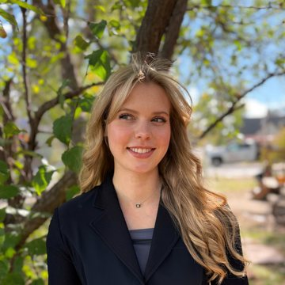
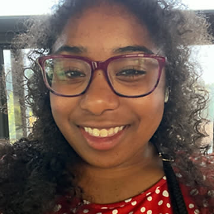
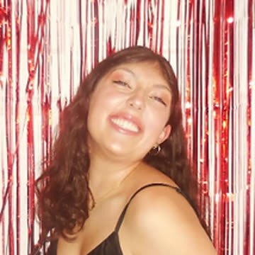

Anna Adams
Co-President
Environmental Studies, minor in Business
Anna has been committed to raising her voice against sexual assault since high school, where she helped found her school district's Title IX Student Council and served on its board for two years. She went on to found her own advocacy club for menstrual product access in school bathrooms. Beyond advocacy, she is an avid skier and dog lover, and honored to carry on this vital work with SACSA to reach as many people as possible.
Psychology, minor in Chinese
Torii's passion for preventing sexual misconduct began in high school, in a club dedicated to promoting consent education. That experience showed her how prevalent sexual misconduct is, and how much more conversation it needs. As a second-year student at CU Boulder and a president of SACSA, she continues to advocate for a cause she cares about deeply.
Integrative Physiology, minor in Public Health
Aris joined SACSA to help build a supportive, empowering, and diverse community of students at CU committed to driving change against sexual violence. She works toward a safer campus through education and advocacy, improving the accessibility of health resources, and dialogue that strengthens community, believing this work can make CU, other campuses, and the broader world safer.
Sociology & International Affairs, minor in Women and Gender Studies
Regan cares deeply about creating a safer, more supportive campus environment for all students. Having seen how sexual assault can impact individuals and communities, she believes student-led advocacy plays a crucial role in creating meaningful change. Through SACSA she works to raise awareness, strengthen campus resources, and build a culture of consent and accountability.
Political Science, minor in History
Gracie found SACSA through a current member, and the club's goals and message immediately resonated. She believes it's crucial to raise awareness about sexual assault on campus, and that students, faculty, and the wider CU Boulder community deserve a space like SACSA to take on a difficult conversation together.
Psychology
Leah was looking for ways to get more involved in raising awareness and supporting survivors of sexual assault. She believes in the power of education, understanding, and open dialogue to break the stigma surrounding this topic. Her goal is to support survivors and foster prevention, empathy, and empowerment within the community.

Alayna Sanders
Secretary
Neuroscience
Alayna joined to bring more awareness to an under-discussed subject and to help plan events that bring the CU community together. She works to promote a healthy, safe campus life for fellow students, and to grow people's knowledge of the topic and of accessible resources, both for health care and personal support.
Molecular, Cellular & Developmental Biology, minors in Spanish and Business
Kaila's path to SACSA started as a high-school ambassador, where she saw the importance and impact of education for all. That experience opened her eyes to how many people are uneducated about sexual assault and how much more conversation needs to happen. SACSA stood out to her as a place where awareness is raised without stigma, and she wants to be part of that effort.

Olivia Hale
Social Media
Sociology, minor in Writing and Public Engagement
Olivia was drawn to SACSA to advocate for her community. She believes that even a heavy topic can be approached with a touch of humor and a light-hearted twist, and she wants people to know that resources are available, that they are valued and loved, and that even when the world feels doomed, there is still hope.